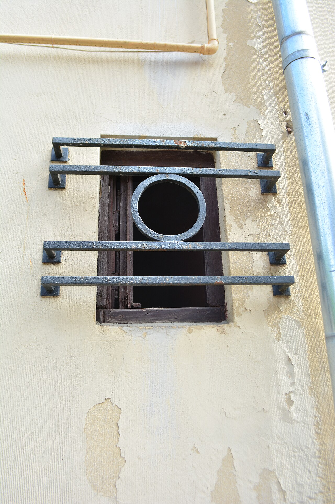
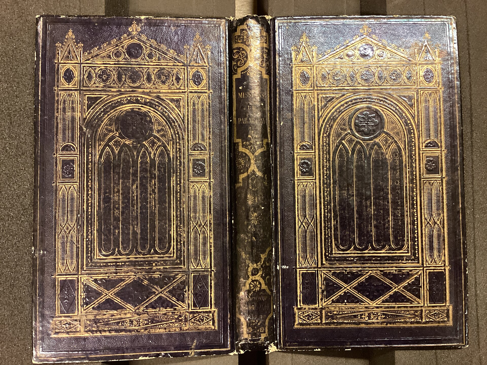
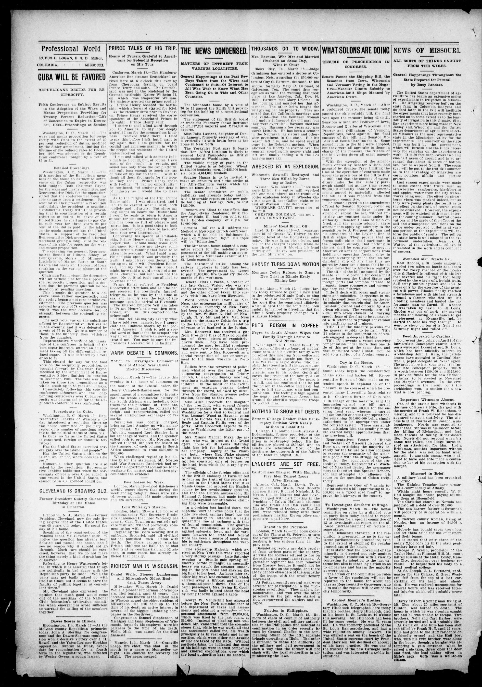
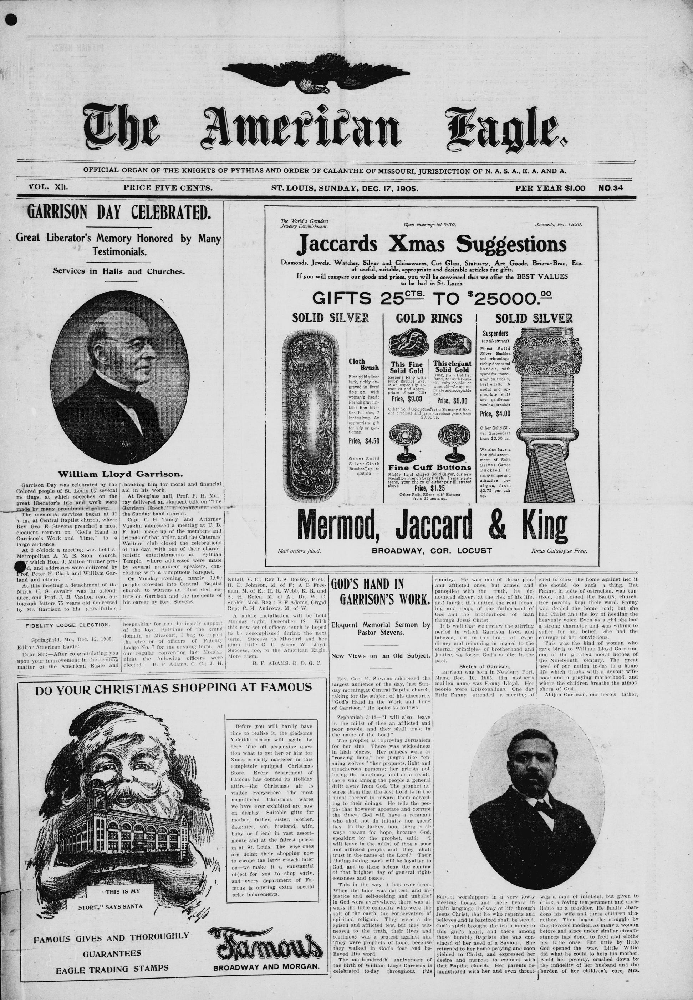

1987 石灰浆
最外面这一层是石灰浆，铲刀斜着推过去就成片掉，掉下来的片背面是平的，翻过来能看见下面那道掺沙砂浆的沙粒。
颜料 #DCDCC8 · 断面 3 层
1
已铲开 8 / 9 处
视口层位 1 / 9
铲痕角 62° 痕宽 2px 间距 6px
白石灰线 1px 号牌 40×24px
断面读取失败（错误码 FLAKE-09）：第 9 层剥落还没铲开，断面读数取不到。
层位与颜色的对应见下方对照表；第 9 处的修法见「断面读取失败」一节。

读年代靠数铲掉了几层，不靠颜色。每处断面依次露出 2 至 4 层颜料，层与层之间是 1px 白石灰线；剥落底部留 3 至 5 道 62° 铲痕，痕宽 2px、间距 6px，末端一道 1px 翘起高光。右侧 96px 的层位索引竖栏里，每个条目的纵向位置就是那处剥落的高度，滚动时当前视口内的层位号会亮起。
最外面这一层是石灰浆，铲刀斜着推过去就成片掉，掉下来的片背面是平的，翻过来能看见下面那道掺沙砂浆的沙粒。
颜料 #DCDCC8 · 断面 3 层
1
砂浆里掺的是筛过的河沙，断面上一粒一粒看得见，边口比上一层的石灰浆糙得多，铲到这里手上开始有阻力。
颜料 #7A6A55 · 断面 3 层 · 深度 24mm
2

胭脂虫红是修墙那年刷上去的，色相 326.9 度，明度不到 40%，一整面墙里只有这一处是彩的。
颜料 #A8206B · 断面 4 层
3
剥落与剥落之间至少留 24px 没动过的原墙：铲痕不外溢，断口也不接在一起，好让每处断面都能单独读。
掺了沙的石灰是摸上去最粗的一层，1961 年补的那块比原来的墙面高出四毫米，铲刀过这里会跳。
颜料 #7A6A55 · 断面 3 层 · 高出 4mm
4

烟熏出来的黑不是刷上去的，1953 年这面墙前面烧过东西，黑只留在下半截。
颜料 #241C16 · 断面 3 层
5
断面怎么读
从断口往里数：一道白石灰线下面就是早一层。一处只读 2 至 4 层，再多就得把整块灰浆铲下来，那是另一件事。
九处里最深的一处读到 4 层，最浅的只读到 2 层。层数不齐不是漏铲，是每处的灰浆厚度本来就不一样。
层位号按铲开的深度编，不按颜色编。同一颜色的两层（1948 与 1987 都是石灰浆）各有自己的号牌。
1948 年重刷的石灰浆比 1987 年那层薄，铲刀一碰就透。
颜料 #DCDCC8
6
土灰砂浆只剩一道边，铲到第七处时已经要贴着墙看了。
颜料 #7A6A55
7
号牌 40×24px 挂在剥落左下角，牌面是刀刻的层位号：1px 凹槽加 1px 白石灰高光，牌不压在断口上。
断面 2 层
8
空状态（第 9 处）：这一处还没铲开，层位号牌挂在钉子上的痕迹已经在了。断面读数失败，错误码 FLAKE-09。
9
号牌按深度编，不按颜色编
1948 与 1987 两层同为石灰浆 #DCDCC8，颜色一样、号牌不同；铲到第九处时手已经收力，牌下那道刮痕只剩 5.6px。
读数口径：断面层数指该处露出的颜料层数（2 至 4 层），层与层之间的白石灰线固定 1px、由 #DCDCC8 提亮 6% 得到 #E9E9D7；铲痕勾在剥落底部，痕宽 2px、间距 6px、方向自左上向右下 62°，末端 1px 翘起高光；号牌 40×24px，牌下 4px 有一道横向刮痕，长度从 12px 起按层位号每层递减 0.8px，第 9 层只剩 5.6px。
这张表是全站唯一的层位依据：层位号、颜色、色值、年代、断面读数五列。色值一列只出现四个 HEX，因为整面墙只有这四种材料。
11987石灰浆21979掺沙砂浆31971胭脂虫红41961掺了沙的石灰51953氧化铁黑61948石灰浆71942土灰砂浆81939氧化铁黑91936铅红层厚比例按实测层厚画，不是等分：最厚的一格是 1961 年补的那块。
读表口径：色值一列只有四个 HEX，因为整面墙只有四种材料；同一个色值出现两次，是两层真实存在的同色灰浆，不是笔误。
层位号与年代一律等宽对齐，好让铲到第几层、哪一年，竖着扫一遍就对得上。
| 层位 | 颜色 | 色值 | 年代 | 断面读数 |
|---|---|---|---|---|
1 | 石灰浆（乳白） | #DCDCC8 | 1987 | 已读取，3 层 |
2 | 掺沙砂浆（土灰） | #7A6A55 | 1979 | 已读取，3 层 |
3 | 胭脂虫红（洋红） | #A8206B | 1971 | 已读取，4 层 |
4 | 掺了沙的石灰（土灰） | #7A6A55 | 1961 | 已读取，3 层 |
5 | 氧化铁黑（烟熏） | #241C16 | 1953 | 已读取，3 层 |
6 | 石灰浆（乳白） | #DCDCC8 | 1948 | 已读取，2 层 |
7 | 土灰砂浆（掺沙） | #7A6A55 | 1942 | 已读取，2 层 |
8 | 氧化铁黑（烟熏） | #241C16 | 1939 | 已读取，2 层 |
9 | 铅红（与胭脂虫红同色相） | #A8206B | 1936 | 断面未读取 FLAKE-09 |
第 9 行为什么是推出来的：那处还没铲开，号牌挂在钉子上的两个痕迹在、牌也在，断面是空的。年代 1936 与铅红是从墙面残留的边口推出来的，不是量出来的。
图标全部是自绘的壁画工具符号：24 单位网格、1.5px 方头线宽，笔画交点各填 1 单位方角。页面上没有任何 Emoji，也没有彩色字形充当图标。
铲刀
trowel
铲刃是 9 单位宽的梯形，柄折两段；刃口三处收口线各 1.5px，交点上填 2 单位的方角。
灰刀
float
板面 18×7 单位，握把 12×5 单位；两者之间只留 3 单位空档，不画曲线。
墨斗
chalk line
斗身 11×9 单位，轮子直径 6 单位；墨线从斗口拉到桩上，线宽 1.5px，不画虚线。
颜料罐
paint can
罐身 14×13 单位，罐口的斜肩用两段直线折出来，罐内的两道横线是颜料位。
第 9 处是九处里最小的一处，只占 2 栏，而且按规矩故意留空不填内容。它的断面取不到读数，所以层位表里那一行的年代是推出来的。
断面读取失败（错误码 FLAKE-09）：第 9 层剥落还没铲开，断面读数取不到，层位号牌与年代仍可读。
已读 8 / 9 处；第 9 处停在「号牌已挂、钉子痕迹已在」。
这一处还没铲开，层位号牌挂在钉子上的痕迹已经在了。
空状态是本案的正常状态：钉子两个、号牌一块、刮痕 5.6px，断面留白。
9
修法：按 24mm 深度把第 9 处铲到与第 8 处同一个断面，读数取到后再补进对照表第 9 行；在此之前，索引栏里第 9 个条目一直显示为待读。
六张图版走同一套处理：先转灰度，再按层位做 3 至 4 阶硬边分色，只保留四个 HEX。分色用离散色阶做，不用抖动、不用噪点，也不做渐变色带。每张图版下面给出原件与权利状态。


签名机制是「按由外向内逐层铲出」：移除，不是输送。所有动效只碰 transform、opacity 与 clip-path 三个属性，剥落本身不位移，任何元素都不许浮在墙上。
动效预算：首屏 JS ≤ 42KB、CSS ≤ 34KB、字体合计 ≤ 500KB、LCP ≤ 2.1s、CLS ≤ 0.05。
层的分界只允许是 1px 白石灰线，不用渐变过渡、不用噪点叠层，也不做镜头光晕。
90ms，缓动为 steps() 离散分支，一次只走一层；不使用淡入。1px 白石灰线，层位对齐关系立刻可见；剥落不位移。1100ms，第 1 处最后落定。160ms 硬切，没有缓动也没有交叉淡出。1px 竖条，闪动周期 1000ms，停在两处剥落之间的原墙上。1px 的深色底，160ms 后回弹。减少动态时的再发明（prefers-reduced-motion: reduce）：逐层露出与铲痕扫出不再推进，层位关系整份保留、全部静态呈现——每处 2 至 4 层颜料、层与层之间 1px 白石灰线、底部 3 至 5 道 62° 铲痕（痕宽 2px、间距 6px、末端 1px 翘起高光）、40×24px 号牌与牌下那道按层位号递减 0.8px 的刮痕，一件不少。
窄屏上台面更窄，机制换成纵向：9 处剥落自上而下改成 9 段通栏，断面与 2px 铲痕全部保留，层位索引从右侧竖栏换成主张句下方可横滑的层位条，一次露出 5 个层位号，牌面仍是 40×24px；悬停加线照常出现，它是信息，不是装饰。